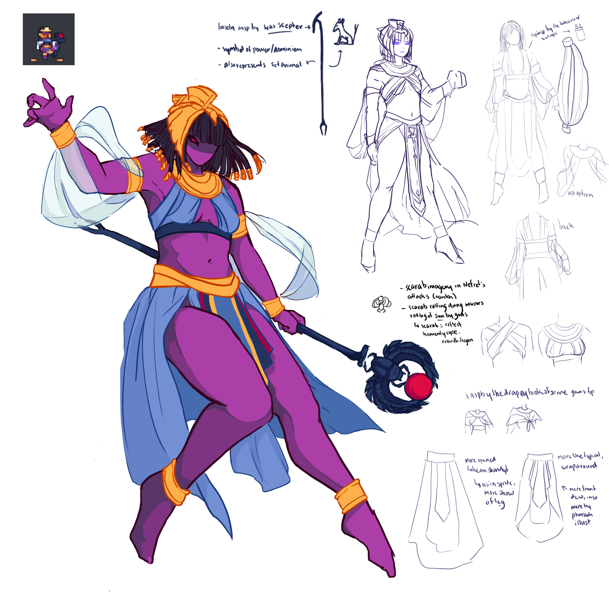
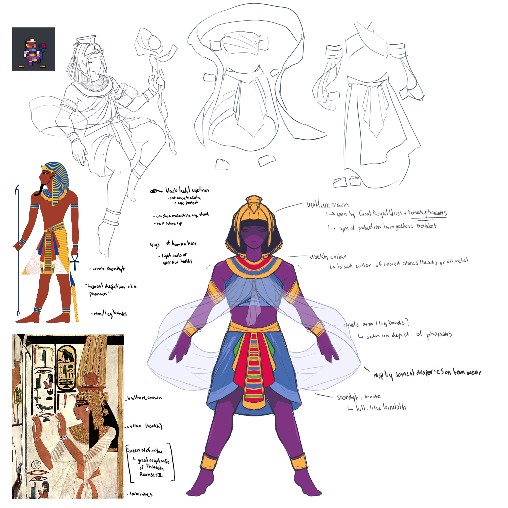

nefret the pharaoh concept
I made some conceptual designs for a character from Realm of the Mad God, Nefret the Pharaoh. As a relatively recent, somewhat minor character, Nefret piqued my interest. The challenge of creating a more detailed character design from a 16x16 sprite is both constraining and open to much interpretation.
Not much info is given about the character; there is a brief introduction posted, saying "Over the ages, rule of the desert slowly but surely fell into the hands of Oryx. Consequently, both denizens and rulers have been forced to kneel in the wake of this conquest. There is still one pharaoh who will not bow down, and who seeks to right this humiliation." What I take away is that the character is a pharaoh, likely female as "Nefret" is a primarily female name. So, I began my research into pharaohs.
I looked more into the attire of Egypt, particularly pharaohs, and found some general wears. Most had ornate shendyts, headdresses, and usekhs (broad collars). Comparing these garments to Nefret's sprite gave me some ideas of correlation between the two. She appears to have a two piece outfit of blue material, which I interpreted as an ornate shendyt and some top. There appear to be some gold ornaments on her ankles, which I brought to the design as the arm/leg bands seen in some pharaoh illustrations. The gold on Nefret's head felt to me to map well to the Egyptian vulture crown, a headdress worn by great royal wives and female pharaohs. However, there was also some discrepancy, as the gold on the sprite appears to not be one continuous piece. I balanced this with the gold beaded trim on the end of her hair, braided or tightly coiled as seen in wig styles of the wealthy. The white around her arms was interesting to me, and I took to designs interpreting it as a loose sleeve-type accessory, or extra fabric placed around the arms (inspired by the draperies seen in some other wears).
Of course, while I did look into actual pharaoh attire and styles of ancient Egypt, I don't think making a wholly historically accurate costume would be necessary in this case. Obviously, through the usage of pharaoh, as well as other instances of ancient Egyptian mythology in the game, they are closely tied. Of course, like every unique interpretation, the game has it's own spin on things, from design to story. Clearly, Nefret's two piece outfit does not appear to be 100% historically accurate. From what I found, most attire was as dresses. Still, I think that combining aspects of historical fashion with that of fantasy ideas works well in the end.
Adobe Photoshop; September-November 2022